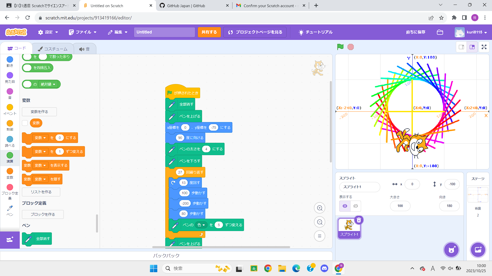

1-1 サイエンスアート

1.内容
スクラッチを使って線を書くプログラムを作成した。図は上に示す。このプログラムは、I-1の実験実習にて使用したプログラムに縦横に線を引くプログラムを追加した。大乱闘スマッシュブラザーズにて登場するスマッシュボールを模しており、写真は下図。
引用 https://smashwiki.info
2.感想
13度回す、100歩動かす、-200歩動かす、80歩動かすというプログラムでどうして図のような円を描くことができるのかわからなかったが、友人の説明を受けることでこの仕組みを理解することができ、自分の成長につながった。
作成したプログラムのもとのような絵を作成しようとしたとき、線を引くプログラムなどは簡単に作成することができるが、その線を角度をつけて何本も引くとこのように見えるという考えに至ることができないなと思った。